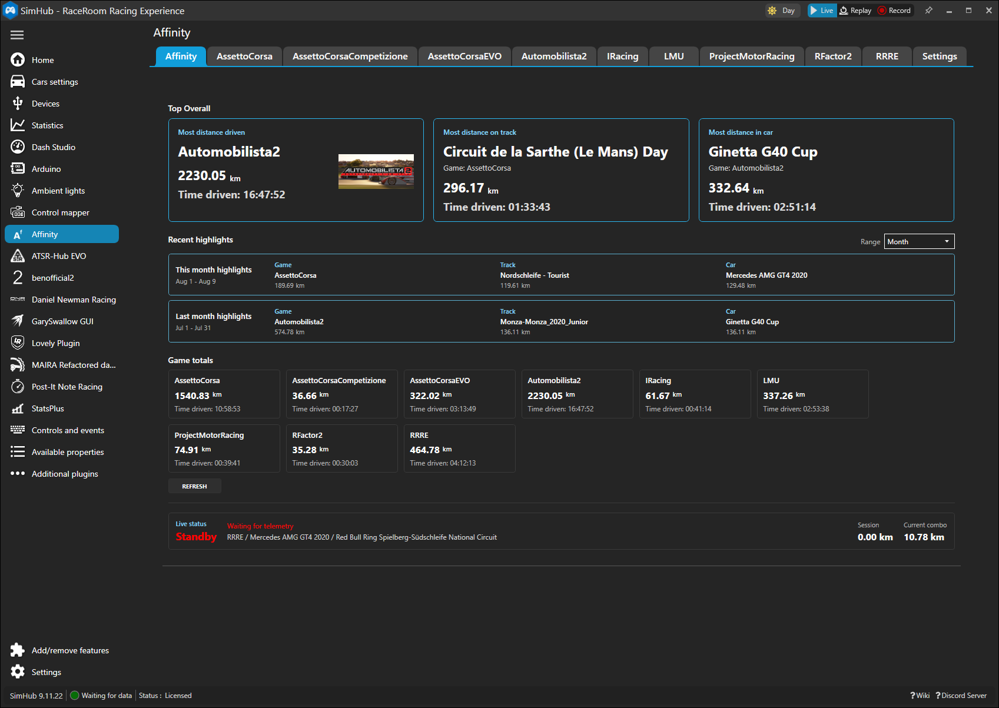
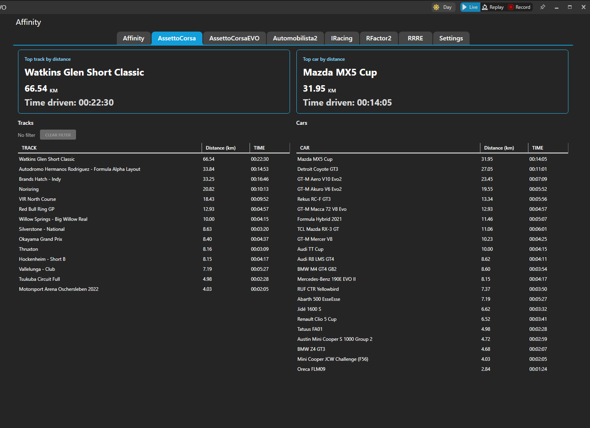
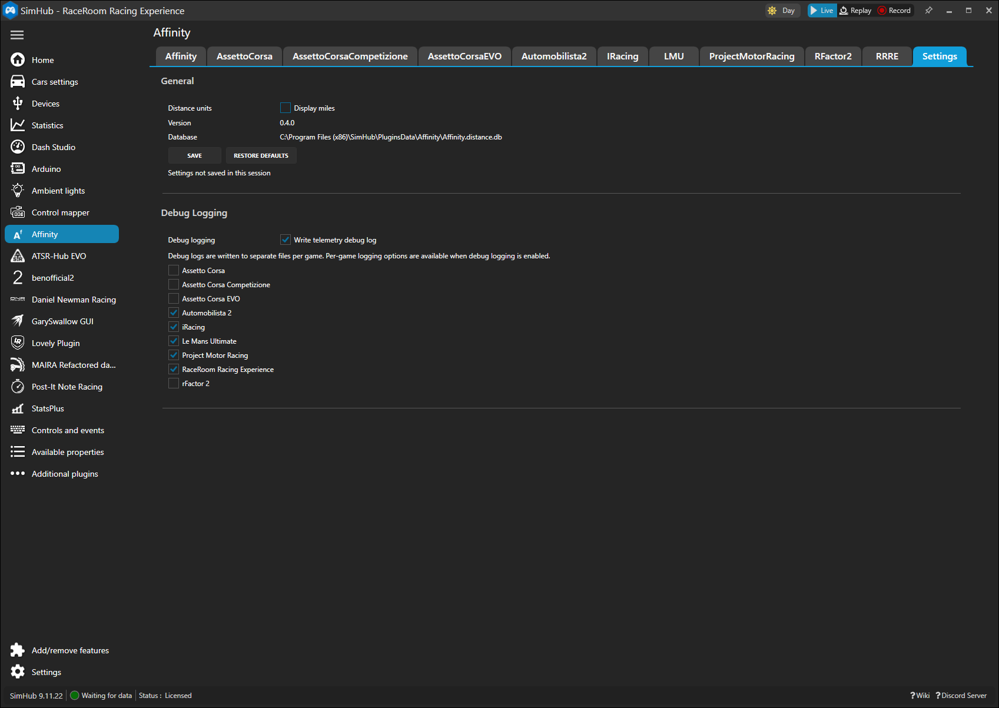

Cumulative history
Keep long-lived totals across your sims so you can answer where you spend your real driving time.
SimHub plugin
Affinity tracks cumulative driving distance and driving time across multiple racing sims, then turns those totals into clean, browsable summaries inside SimHub.
Featured summary
Time driven: 31h 14m
Top track
RaceRoom
412.18 kmTop car
Automobilista 2
287.66 kmWhy use it
Keep long-lived totals across your sims so you can answer where you spend your real driving time.
Browse totals by title, then combine period, sort, and result-limit controls with track and car cross-filtering to quickly see which combinations define your habits.
See your most-driven game, track, and car at a glance from Affinity’s overview tab.
Screenshots
These screenshots show the current Affinity experience inside SimHub, from the overview tab to per-game breakdowns and settings.



Supported today
Get started
Grab the newest ZIP package from GitHub Releases.
Open latest releaseCompare the ZIP hash against the published .sha256 file before extracting.
Copy the release payload into your SimHub installation folder, then restart SimHub.